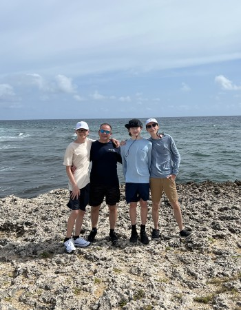

Born and raised in the Midway area of Chicago, Illinois.
Before moving to Illinois Tech for school, I lived with my mom, dad, and two brothers.

Interests and Hobbies
I enjoy playing video games with my friends. Some of my favorites include FPS games like Valorant and CSGO or arcade shooters like Battlefield and COD.
I love to travel and hope to one day have a job where I can travel across the world while being paid.
I listen to music probably most of my day; rap, hip hop, and lots of other genres.
Computers and technology have always interested me. I think being creative with the tools technology gives you unlocks unlimited potential.